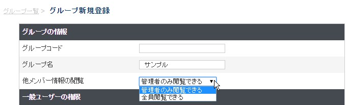

用語集
- 安全走行支援
- cyzenのオプションの１つで、スマホで運転データの集計および危険運転を通知できる機能です。
- ルート自動記録
- ルート自動記録機能は、現場スタッフが行動ボタンを押さなくても設定したタイミングで位置情報を
自動記録する機能です。 当機能をオンにしますと、アプリや管理画面で移動の軌跡が線で結ばれて
表示されます、どのルートをどう移動したかの把握が可能です。表示するメンバーが複数いる場合は
線の色が変わって表示されます。
- ステータス
- 企業毎に表示する行動ボタンの総称です。初期設定では「出勤」「退勤」「報告」のようになっていますが
管理サイトで、お客様の業務に合わせて「納品」「点検」などのように好きな文言を決めて追加、変更ができます。
- 省電量モード
- 従来のルート自動記録と異なり、一定時間間隔で記録するのではなく、移動した時にだけ記録をすることで消費電量を抑えます
- 自社担当者
- スポット毎に設定できる自社担当者のこと。cyzenのユーザーが設定できます。
- 顧客担当者
- スポット毎に設定できる顧客担当者のこと。
- マルチアカウント
- 1台の端末上に複数のアカウントを設定できる機能のこと。
アクティブにできるのは1人だけで、ルート自動記録もアクティブなユーザーのみ動作します。
- 出勤前ステータス
- 出勤前に選択できるステータスのこと。
通常は「出勤」しか選択できませんが、ご希望のお客様は弊社サポートまでお問い合わせください。
- 進行順ステータス
- 特定のステータスを選択した後にしか選択できないステータスのこと。
例) 休憩開始 -> 休憩終了
- ユーザーの最新情報表示
- 位置情報画面で地図に表示されているユーザーの最新情報だけを全員分吹き出しで表示する機能のこと。
初期設定時はご利用になれません。別途、弊社カスタマーサポートまでご連絡ください。
- 行動種別
- ステータスと報告書を関連付ける種別のこと。複数の定義ができ、１つのステータスから複数の報告書を
作成する場合に利用します。
例) ステータス[訪問] — 行動種別[新規訪問] — 報告書[新規営業報告書]
例) ステータス[訪問] — 行動種別[定期訪問] — 報告書[営業報告書]
- システム管理者
- 1企業に1アカウントだけ存在する管理サイト専用ユーザー。
すべてのグループ、ユーザーに対して管理権限を持つ。
管理サイトでは、提供されている機能をすべて操作可能。
- グループ管理者
- グループに所属するユーザーの中で、グループ管理権限を持つユーザー。グループ内に複数作成可能。
グループに所属するユーザーに対して管理権限を持つ。
管理サイトでは、報告書の閲覧・編集のほか、位置情報画面でグループ所属のユーザーの情報を閲覧可能。
- 一般ユーザー
- グループに所属するユーザーの中で、グループ管理権限を持たないユーザー。
設定によりグループで共有される情報の閲覧、作成、編集、削除に制限を設けることができる。
管理サイトでは、報告書の閲覧・編集のみ操作可能。
- ユーザーログインID
- cyzenに登録されているアカウントのID。アプリ・管理サイトのログインに利用する。
システム内で一意。
- グループID
- cyzenを使用するユーザーが所属するグループのID。アプリでグループに参加する際に利用する。
システム内で一意。
- チェックイン
- ステータスの打刻時に、付近にあるスポットと打刻を紐づける機能のこと。
システム管理者がステータスをチェックインできるよう設定することで利用できる。
チェックインできる範囲は半径500m以内にあるスポット。
- ロックアウト
- パスワード試行上限数を超えてログインに失敗した場合に、一定時間ログインできなくなった状態を表す。
- 他メンバー情報の閲覧
- グループの設定項目の一つ。
グループに所属するメンバーの行動履歴、報告書を一般ユーザーが閲覧できるかどうか決めることができる。
- スクロール操作による自動再検索
- ホームおよびスポットの地図では最大300件までスポットを表示します。スポットが表示されていない位置まで地図をスクロールすると、そこを中心にスポットを再検索します。（キーワードで検索している場合を除く）
